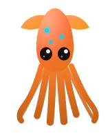
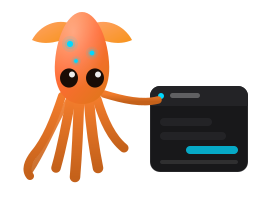
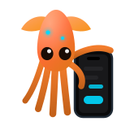

One subscription.
A whole team.

Turn your Claude app into a team that remembers what it did, checks its own work, and never ships without your yes.
One click on GitHub. Your own private copy. Free, forever.
Or have us run it for youFive things nothing else does.
It doesn't start over.
Close the app. Come back Tuesday. Your team knows exactly where things stood, and why.
Nothing ships without you.
Every change arrives as one plain-English request. You read it, you tap merge. That's the job.
One subscription covers the whole team.
Your Claude plan already pays for it. No per-seat pricing, no extra logins, no new bill.
They check each other's work.
One seat builds it. Another reads the real thing and says "not quite." You get the disagreement in writing, before it matters.
It fits in your pocket.
Send the order from your phone at lunch. Merge it from your phone after dinner.
You ask. They build. You decide.
Send a plain order from anywhere. The team plans it, builds it, and checks each other's work. What comes back is one request you can read, and one button only you can press.
Desk to pocket. Same merge button.
Your seats, your specialists, and you.
Coach
ChatYour everyday desk. Talks plainly, looks things up, and turns a rough idea into a clean request — opened as a pull request for your Team Leader.
Team Leader
CoworkPlans and audits. Turns what you want into a plan, checks the finished job against it, runs the security read, and hands you a plain MERGE or FIX-FIRST.
Engineer
CodeBuilds it. The seat that writes code — always as a pull request, never merging its own work.
Creative Director
DesignDraws it. Designs the pages and the screens, then hands them down the line to be built.
Dispatch
Mobile ScoutYour bridge to the team. Carries work to the seats, talks to you on desktop and mobile, and lets you run a whole job on the go.
Inspector
Chrome inspectorDrives your live pages in a real browser, clicking and typing like a visitor would, to catch what breaks before they do. It tests; it never ships.
Every seat can propose. None can approve. The gate is yours alone, and it fits in your pocket.
It works where your work already is.
These are the workers' powers. The six seats above reach into the tools you already use and bring the results back to the same place — no exports, no copy-paste, no second dashboard to keep up with.
A connector is a door you open once, and you can close it again the same way. The seats only ever use the ones you have opened.
Your other seats work in shifts. This one doesn't.
The six seats wake for a session, do one job, and hand off — the journal remembers, so the next shift starts where the last one ended. The Agent is the one that stays up, and it is the seat you actually talk to: chat, review and merge, all in the same place.
It is the only seat that runs without you in the loop, so it gets its own limits — and it still cannot merge anything.

This is the actual app, running right here.
Not a screenshot. The real screens, on the page — scroll them, tap through them, switch between the phone and the desk.
Same Agent both times. The merge button is yours in either one.
Three jobs a factory picks up on day one.
Not case studies — jobs. Ordinary weeks of work the seats take off your hands.
The site that keeps up
Describe the change in a sentence. Design draws it, Engineer builds it, the Inspector checks it on a real phone, and it arrives as one request you approve.
Monday, before you sit down
The team reads the week back to you: what moved, what stalled, and the short list only you can decide. In your inbox, not in a chat you have to go find.
The chat box that answers at 2am
The Agent sits on your own site and handles the questions you answer twenty times a week. When it isn't sure it says so and hands you the thread, instead of guessing.
The skills we'd start you with.
A seat is a room a Claude works in. A skill is what a seat reaches for — and the ones worth trusting are the ones the seats run on each other.
Your Team Leader's security read, run before you ever see the change. Real problems, not a list of maybes.
Renders every page at every screen size and measures what breaks. Receipts, not opinions.
Reads the whole journal and tells you what keeps going wrong.
Plain answers to anything you don't recognise yet — repo, branch, merge, deploy. It explains; it never does.
Template improvements arrive as a pull request you can read, then approve or turn down.
Keep explaining the same thing and the team turns it into a skill of your own.
Underneath them: the seat boot kits, the mechanical rules, and the mission packs, so there is real work waiting the day you open it.
You hold the last station.
Nobody skips the line. Nobody merges their own work. The factory journal writes every step into git, so tomorrow's shift starts where today's ended.
Two honest eyes beat one clever one.
We spent months chasing the wrong race — a bigger model, a smarter single seat. What changed everything was smaller and stranger.
Give one seat an ordinary working connection to do the job. Give a second seat a read-only view to check it. Let the two confirm or deny each other. Neither has to know anything — they look, and they check each other's looking.
Set up this way, an ordinary model runs circles around one brilliant seat working alone. The best output isn't either view — it's the difference between them. When the builder says "done" and the overseer says "not quite," that gap is a truth neither could see alone.
The God-View
Read-only omniscience
sees all · touches nothing · keys stay in the vault
Your Agent, on your home screen.
One app for iOS and Android. Not a viewer — the whole loop, in your hand.
Included in the managed plan when it lands — not an add-on, not another line on your bill. The Agent runs on your own Claude credits with a thin platform fee, never a markup on what Anthropic charges you.

Start free. Hand off when you want to.
Self-service
Free
You bring your Claude plan.
Run your own factory. It checks for updates daily and opens a pull request when there is news, so you are never chasing it.
Start your factoryFully managed
$99 setup then $25 / month
Support pull requests, covered by your subscription.
You tell us what you need; we post a ready-to-merge pull request into your factory. Includes the iOS and Android Agent app when it lands, not a separate line item.
Get managed supportCustom
By assignment
Scoped and quoted per project.
Bigger jobs: real research, a new feature, something non-standard.
Talk to us$20 Claude Pro + $5 Cloudflare = a full team and a deployed website.
Pricing is a starting point and may adjust. The model will not: you approve every change, always.
Boring where it counts.
SquidBay is built with this exact factory. The copy the template button gives you is the one we use ourselves. No hidden version, no enterprise edition.
Nothing listens, nothing is reachable from outside. It all runs inside apps you already trust.
Enforced in CI, not by good intentions.
Broad access is read-only. Write access is narrow, and every write is human-gated.
The whole factory is markdown you can read in an afternoon. No binaries, no magic.
A human approves every change. That's the architecture, not a setting.
Take your seat.
Your subscription already contains a team. Three steps and the line is running.
Get the Claude desktop app and any paid plan.
Use the template. One button on GitHub gives you your own private copy.
Attach it to Claude Code and start typing.